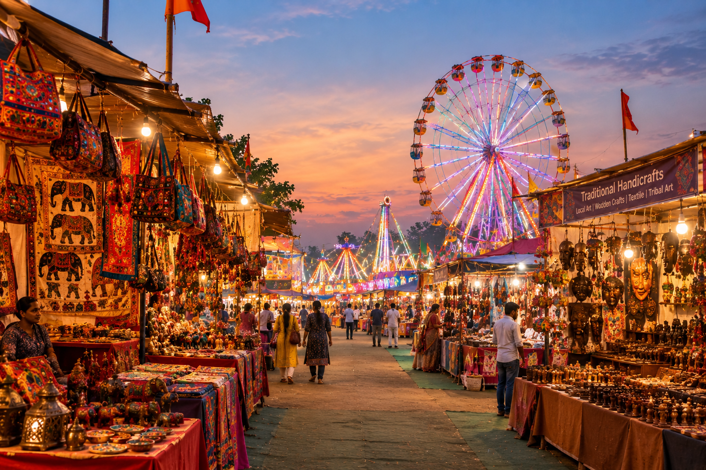

Living Tradition
Karnapura Mela is a traditional Navratri gathering centred around devotion to the goddess, community gathering and festive celebration.
Welcome to Sanskritee

A vibrant Navratri tradition in Chhatrapati Sambhajinagar where devotion meets the colourful atmosphere of a traditional Indian fair.
Karnapura Mela, also known as Karnapura Yatra, is a traditional Navratri gathering in Chhatrapati Sambhajinagar. The experience brings together religious observance, community celebration, local markets, food and entertainment.
Discover what makes Karnapura special
Karnapura Mela is a traditional Navratri gathering centred around devotion to the goddess, community gathering and festive celebration.
Colourful stalls, local food, shopping, entertainment and amusement rides create the lively atmosphere of the Karnapura fairground.
Navratri celebrates the nine forms of Goddess Durga. Karnapura becomes a place of devotion and community celebration during this festive period.
The Karnapura Mela is traditionally held during Navratri. For 2026, Sanskritee highlights the experience during:
A colourful cultural experience
Walk through the lively fairground and experience the colourful atmosphere of Karnapura during Navratri.
Explore stalls featuring handicrafts, decorative items, traditional products and local-market treasures.
Discover food stalls and local flavours that form part of the festive fair atmosphere.
Experience a lively gathering where families, visitors and local communities come together.
Karnapura Mela represents a living form of cultural heritage. Its importance comes not only from religious observance but also from the way it brings people together through markets, food, entertainment and community celebration.
ONE CITY · MANY STORIES · INFINITE HERITAGE
Near Padampura,
Chhatrapati Sambhajinagar,
Maharashtra
Visit when the fairground becomes especially lively with illuminated rides, colourful stalls, food and festive activity.